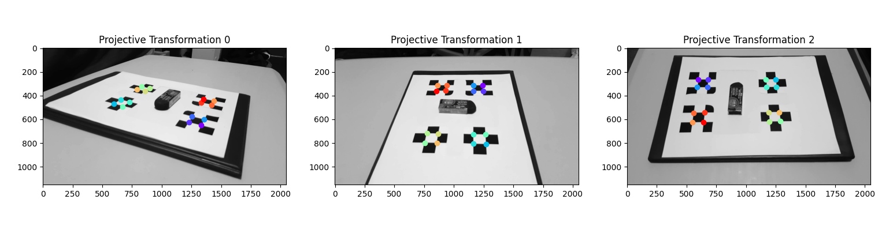

Dvir Hilu: Ligi Mans!
VirtioFS
My role within the research group was to devise a way to allow GPUs to directly access files from a storage device over unified memory. I only had 5 months for the thesis, so I prioritized coming up with a software architecture for the library. As a simple proof of concept, I implemented this architecture in CUDA to communicate with a hardware emulator of a storage device previously set up by the group.
See more
3D Scan
To learn more about and explore classical image processing techniques, I worked on a project to generate a 3D point cloud of an object from multiple images. I decided to use this project as the final project for one of my courses at UBC, and as a result wrote an IEEE style paper about it, which is embeded below. A summary of the work is given in this page, but for a full description of the developed algorithms, please refer to the attached paper.
See more
UBC Subbots
As team captain, I focused on expanding the technical capabilities of the robot for the new design. As a young team, the first revision of the robot was mostly focused on creating a functioning, driving AUV. For the new revision, I planned to add an acoustic localization system and actuators that will allow us to complete competition tasks beyond navigation. Due to the increase in design complexity, the team roughly doubled in size. To allow for a smooth transition, I focused on facilitating and ensuring good communications between sub-team leads, and held weekly status meetings to ensure sub-teams were up to date on each others' progress. The overall team structure is shown in the image below.
See more